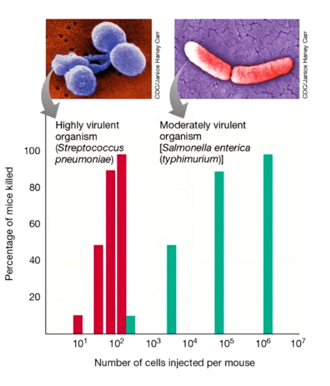
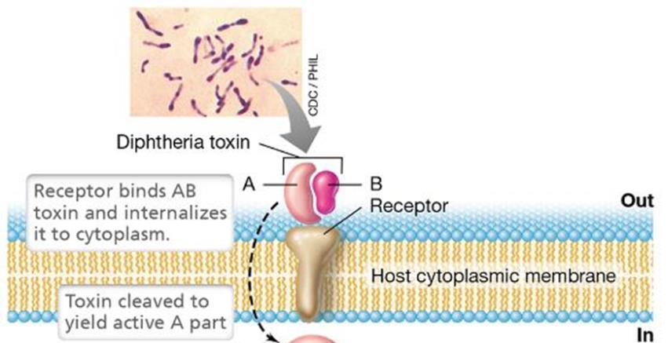
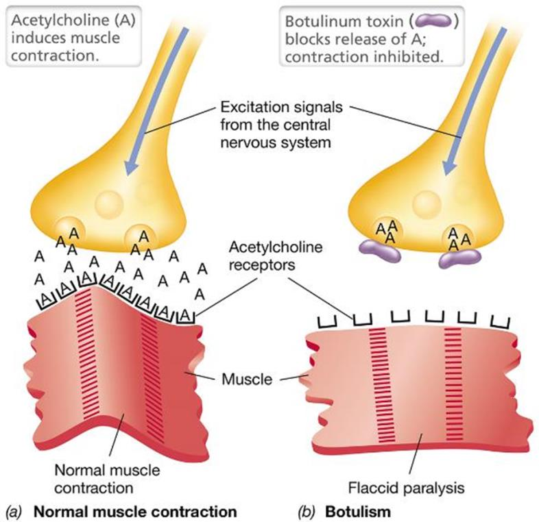
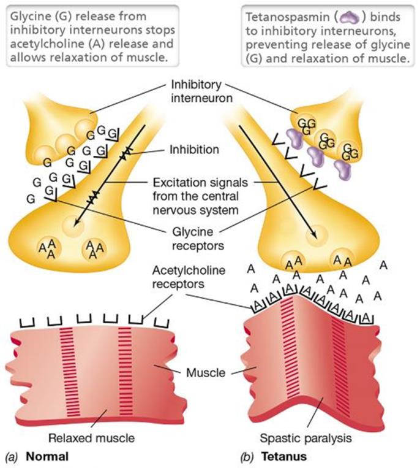
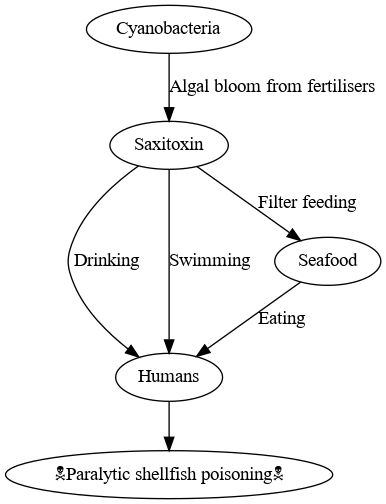
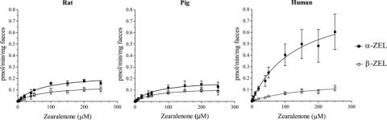
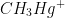
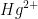
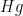
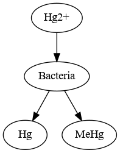

Microorganisms and Toxic Molecules
Created Tuesday 26 April 2022
@MISC @YEAR3 @MICROBIOLOGY @MICROBIOLOGY
A @Toxin is a biologically produced poison
An organism that produces a toxin is a @pathogen
@Virulence is a measure of pathogenicity. @Ebola is extremely virulent
You need much higher numbers of @Salmonella to kill the same number of mice than @Streptococcus ⬇️

Types of toxins:
@Exotoxins (released from cell)
@Endotoxin ≠ Enterotoxin ( not relased from cell but use the @lipopolysaccharide on the outside of the @Gram_negative cell wall)
An @Enterotoxin is the @lipopolysaccharide part of a @Gram_negative bacteria which becomes toxic when solubalised.
@Enzymes that cause cell damage: @Coagulase to cause blood clotting, @Collagenase
AB Toxins
@AB_Toxins have 2 subunits : A and B
Subunit B helps to bind to the membrane while to help the toxic subunit A to enter the cell
@Cholera and @Botulinum_toxin are both AB Toxins

@Botulinum_toxin works by blocking the @acetyl_choline from reaching the @synapse → no muscles can contract

@Tetanus does the opposite and causes acetylcholine to fire continuously → every muscle contracts

Cyanotoxins
@Cyanotoxins from @Algae blooms

@Saxitoxin has @Neurotoxicity which causes nausea, vertigo and paralysis by blocking the Na chennel. Whether is causes paralysis depends on the @dose
Fungi
@Fungi can produce potent toxins: @penecillin @Aflatoxin @ergot_fungus . They are exotoxins, but not protein based. They are @secondary_metabolites (produced but not used by the organism)
| Toxin | Produced by | Found in | Effect |
|---|---|---|---|
| Aflatoxin | Fungus | Cereal, nuts, spices | Genotoxic, liver toxin |
| Ochratoxin A | Fungus (a species of peneccilin) | Cereal, fruit juice, coffee | Nephrotoxin, embryotoxin |
| Patulin | Fungus | Fruit and grain | Damage to liver, spleen and kidneys |
| Trichothecene & Zearalenone | Fungus | Wheat, oats, corn | Genotixin, estrogenic effect on fertility |
@ochratoxin @patulin @nephrotoxin @embryotoxin @trichothecene
@zearalenone is produced by @Fungi but can be metabolised further. Humans have a higher @metabolism rate than rats or pigs → it is important to take differences in species into account because rats have a different @microbiobiome ⬇️

Microbes as modifiers of toxic compounds
A @Toxicant ≠ @Toxin is a harmful compoud not produced by a microorganism: @heavy_metals
They can be natural or man made.
Microorganisms can be used for decontamination
@Organohalide_respiring_bacteria can use @Halides for respiration to make them less toxic or more easily degraded
Microbial degredation of Polycyclic aromatic hydrocarbons
@polycyclic_aromatic_hydrocarbons are a group of pollutants produced by incomplete combustion which can be neutralised by @bacteria or @Fungi
@aromatic @hydrocarbons
Microbial degredation of toxic metals
@Bascillus can convert @Mercury to  (which is harmless) but they can also convert metals into even more toxic things.
 and are highly toxic but  is not. The conversion inside bacteria can go either way; bacteria can either help or hinder⬇️
